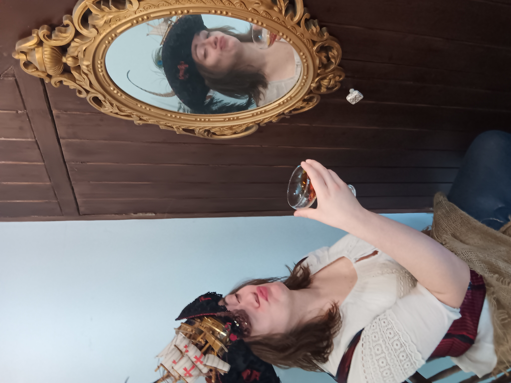
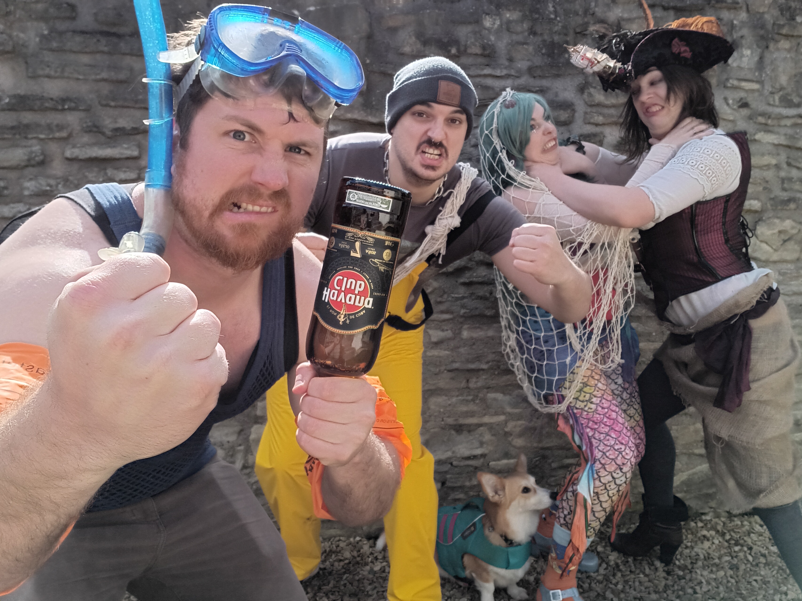
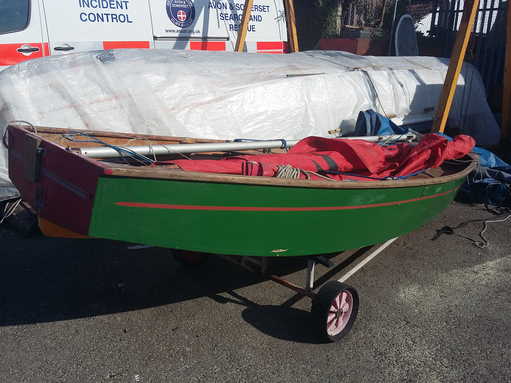
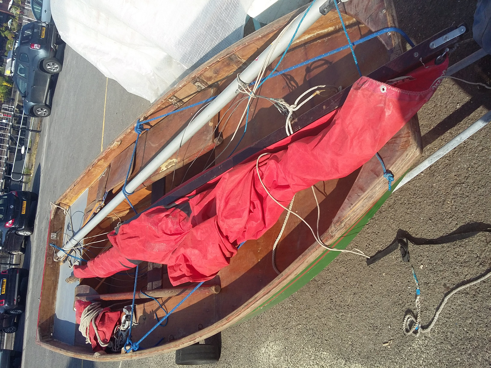
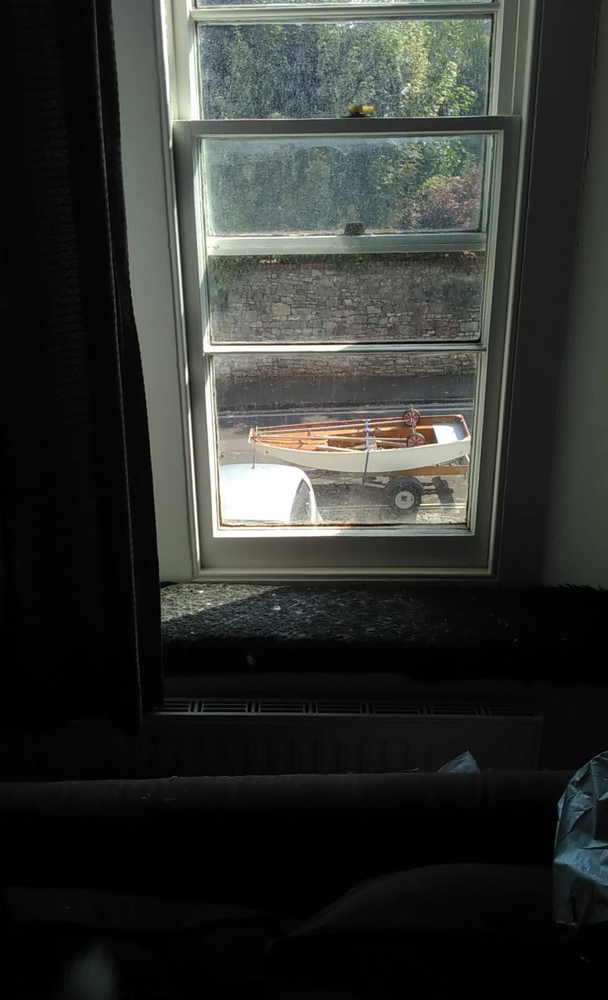
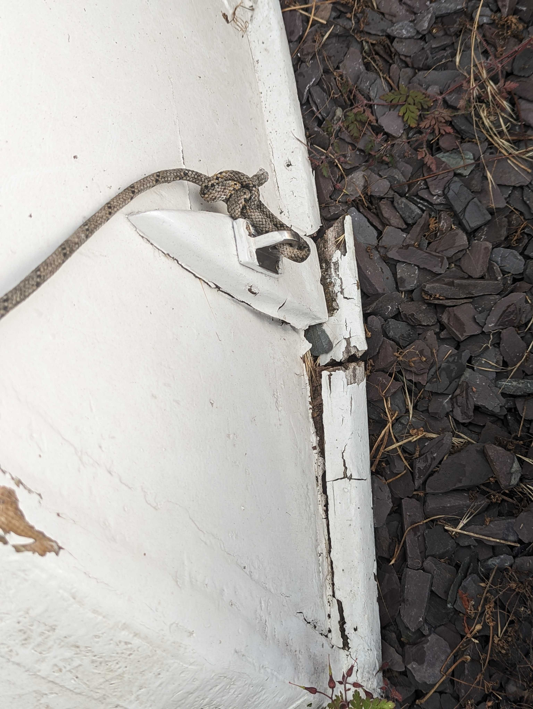
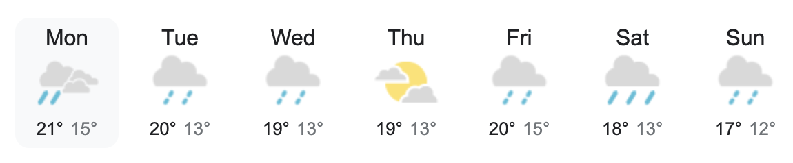

A history of Cabij#
Cabij is a wooden Mirror sailing dinghy: a boat originally promoted by the Daily Mirror. He was acquired by Captain Emily Pole in May 2018; she hadn’t sailed before, but she is in a sea shanty band, which seemed qualification enough to buy a boat.
Captain Emily and Slugbeard#
Emily has been in a sea shanty band since 2018: slugbeard. They’re a silly, four piece band, formed in Bristol, who perform instrumental covers of sea shanties and pirate punk songs, with some nautical originals thrown in for good measure. The good ship Cabij therefore serves a strong purpose as an elaborate cosplay accessory.
 {kind=link}
{kind=link}
Pictured: Cabij’s owner, Captain Emily - and the rest of the band.
Slugs love cabbages and that’s why Cabij is a cabbage. Note: a slugbeard fan is also called a Cabbage.
Furthermore, since it’s traditional for boats to be women, Cabij is a lad.
Acquiring Cabij#
The sea-shanty band and the strong appeal of working with your hands when you’re slogging through dreary academic work led Emily to awaken her inner Captain when Cabij was up for sale in 2018.
 {kind=link}
{kind=link}
Pictured: Cabij in 2018, just before Captain Emily became the owner, from his point of sale in a carpark by Bristol Harbourside.
Emily was told that Cabij should float, given a lick of paint, but we don’t know the last time he’s been on the water - surely before 2018.
Initial repairs#
Cabij was transported to a drive, where Cabij was stored upside down on top of a broken Nissan Micra, in between being worked on by the next-door parking space. What followed was a summer of enthusiastic repairs where paint was scraped off with a borrowed heatgun, old fibreglass tape removed and new stuck on with epoxy, soft pieces of wood scraped away and patched with new and foraged plywood, and paint and primer drunkenly applied in the wrong order.
{kind=link}
Pictured: Cabij looking pretty good in August 2020 with a new lick of paint, after extensive repairs.
“He’s gone to live on a farm”#
During the coronavirus pandemic, a change of living circumstances meant there was no longer a drive or a broken Micra on which Cabij could reside. As a temporary stop-gap, boat storage was found on a farm on the outskirts of Bristol in 2020. Unfortunately, as the pandemic went on, this storage lasted much longer than expected. Following the farm, Cabij then lived for a time on a friend’s driveway in Bristol, and then briefly in another friend’s garden (where future repairs) are planned. He still hasn’t spoken about what happened to him at the farm, but Cabij came back in a worse state than Emily first found him.
{kind=link}
Pictured: Cabij’s sad, soggy bow.
Future plans#
The near future: Boat Week 2k23 and Chew Valley Lake Sailing Club#
In 2023, Cabij’s future waterside home at Chew Valley Lake Sailing Club was secured. Before he could make the journey, however he first needed to become ship-shape and Bristol-fashion once more.
Emily booked a week off work July 10th - July 15th 2023 with an aim of getting Cabij ready for the water: “Boat Week 2k23”. The week was chosen for it’s historic fine weather, whether that appears however remains to be seen… the forecast is not encouraging.
{kind=link}
Grand plans#
Cabij may be but a small wooden sailing dinghy, but he has big plans, to:
Be decorated like a cabbage.
Sport a beautiful slug figurehead.
Be officially renamed in a poseidan naming ceremony.
Sail down the Avon gorge!
Attend Bristol Harbourside Festival.
Go dingy cruising.
Should he sink, be immortalised as furniture.
Share his story!
{kind=link}
Pictured: an “artist“‘s impression of Cabij’s final form.